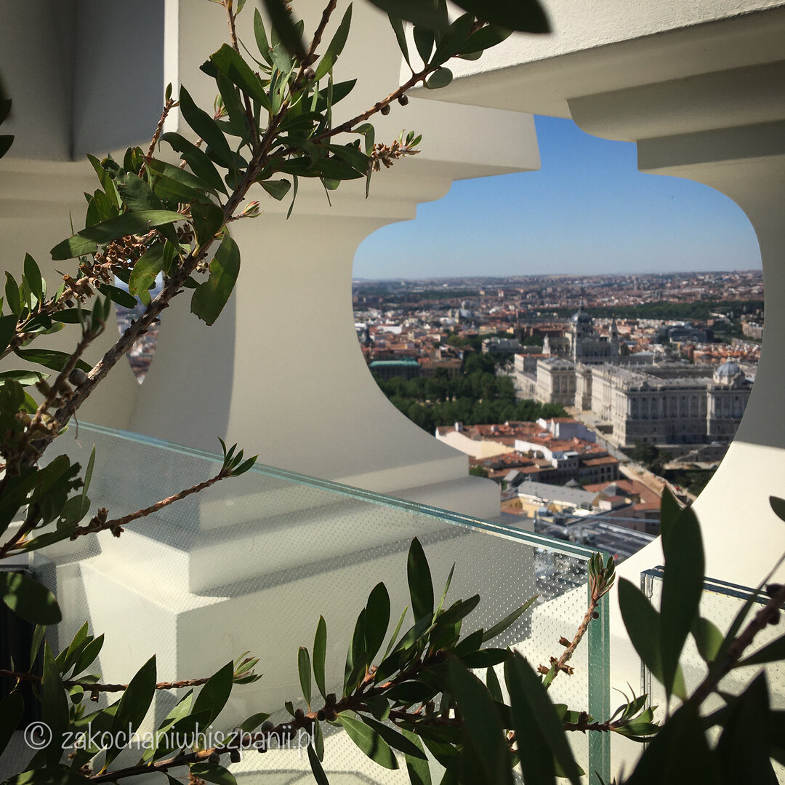
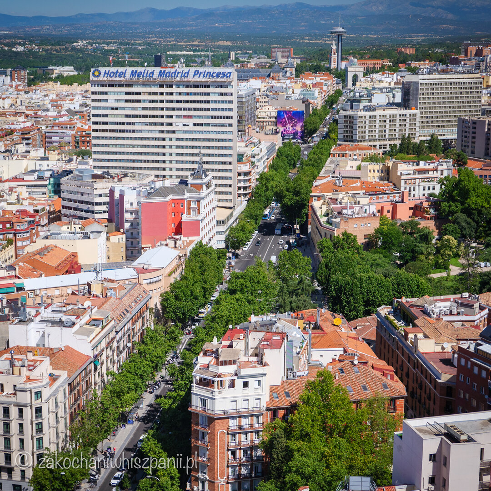
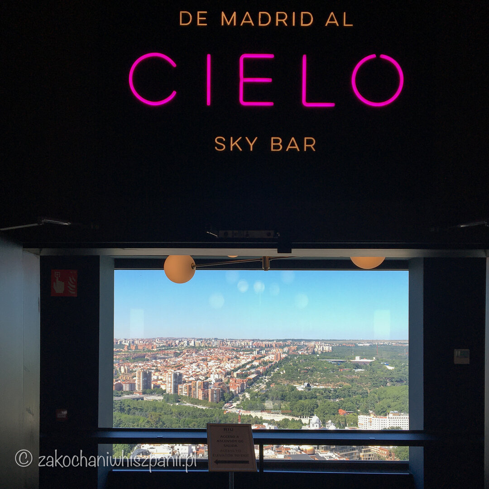
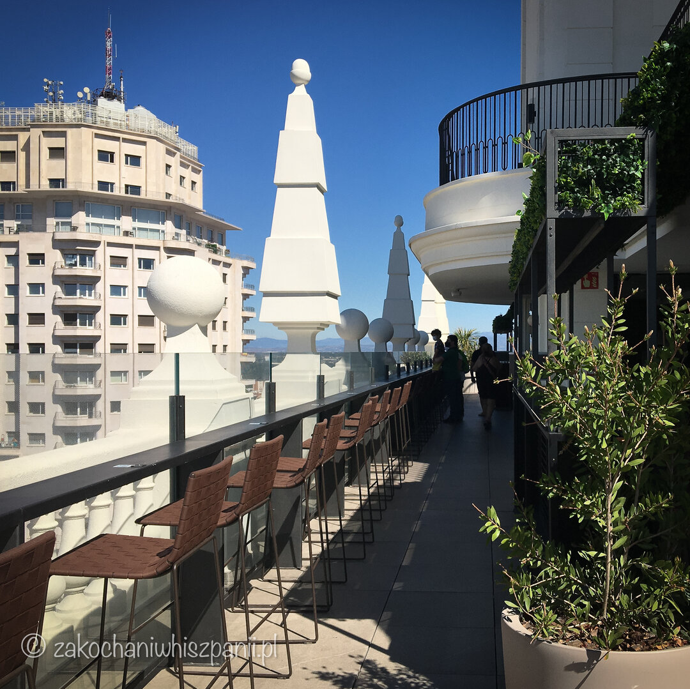
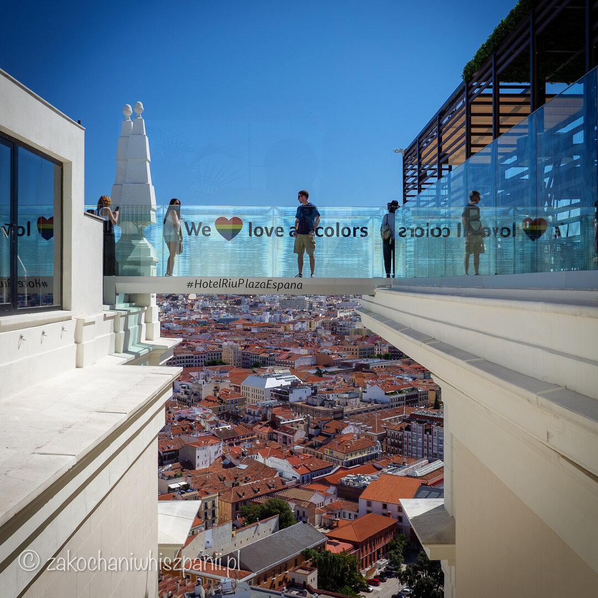
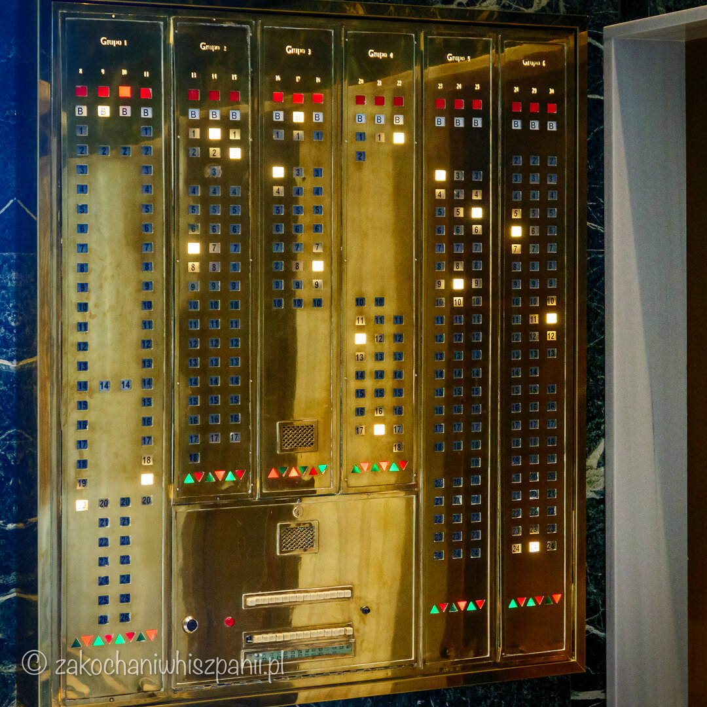
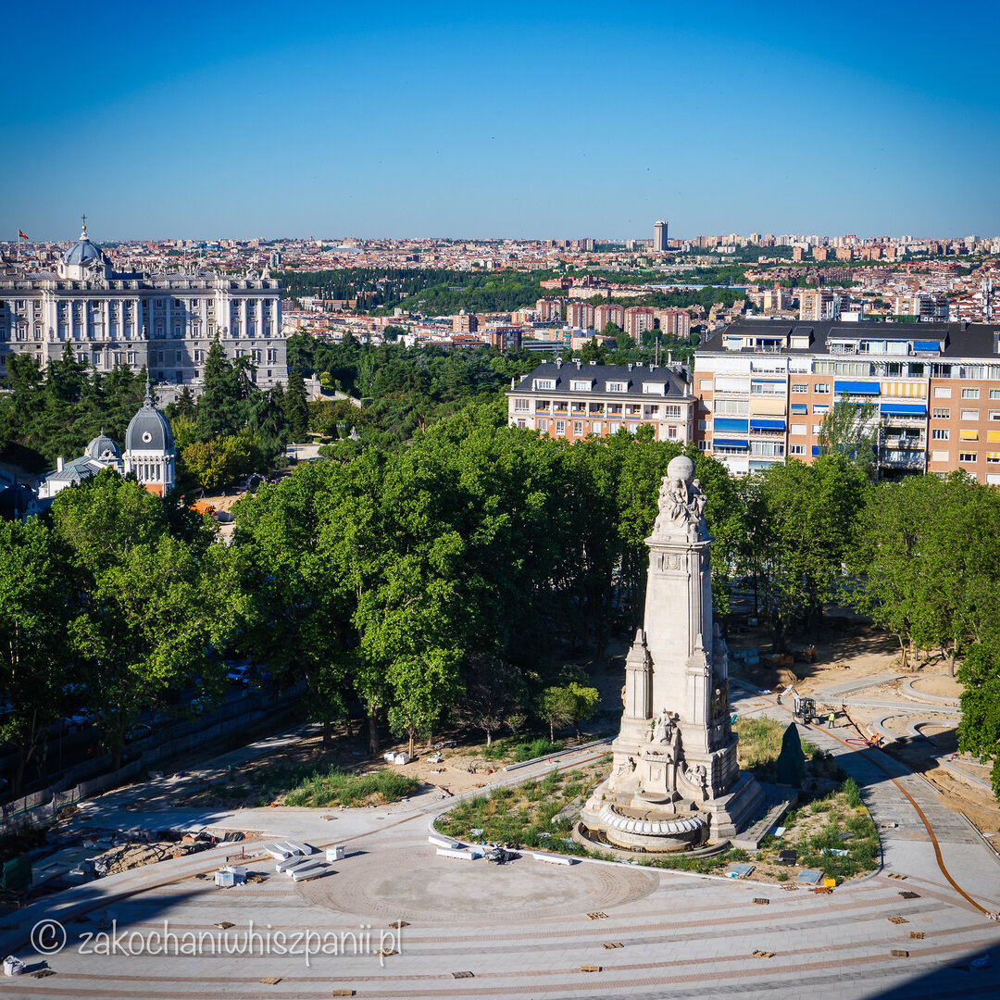
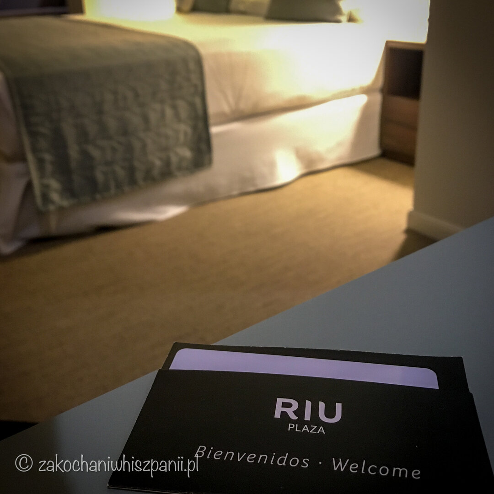
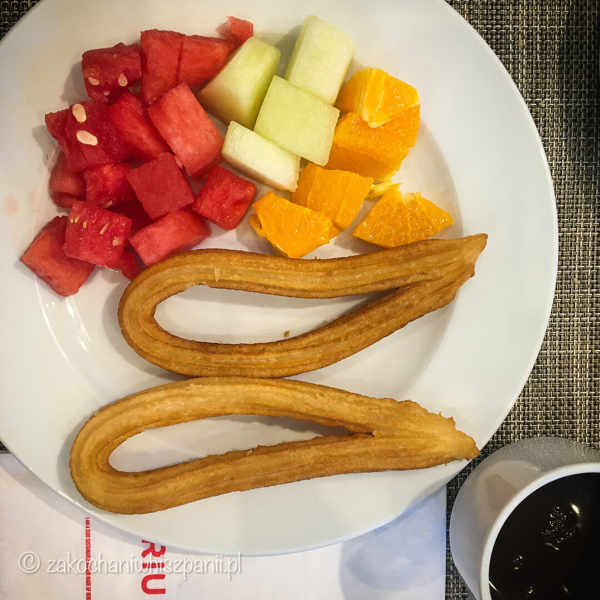
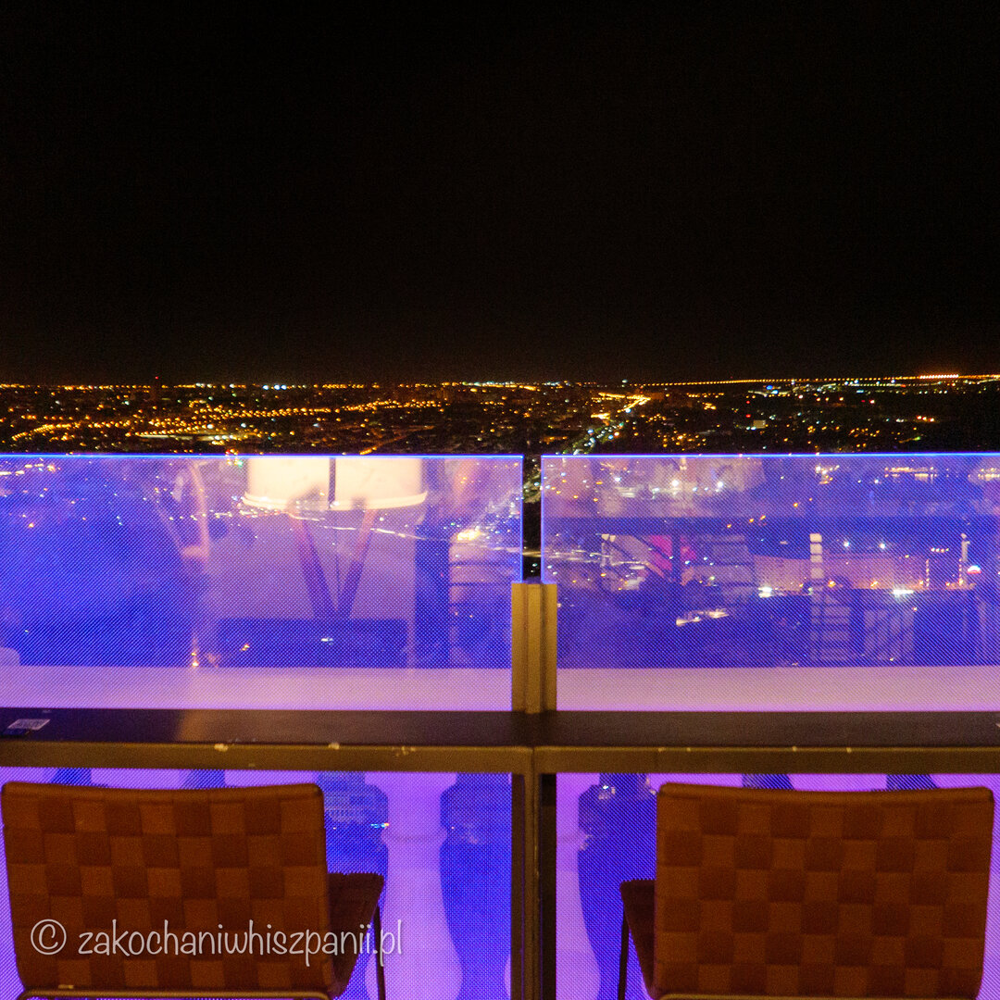

Hotel Riu Plaza España
Gdzie nocować w Madrycie? Hotel z najlepszym punktem widokowym
Planujesz pobyt w stolicy Hiszpanii? Zastanawiasz się, jaki wybrać hotel w Madrycie? Szukasz nowoczesnego hotelu w Hiszpanii np. na weekend we dwoje, miejsca na randkę lub niesamowite oświadczyny? Z czystym sumieniem możemy Ci polecić wizytę w Hotelu Riu Plaza España, który jest jednym z najlepszych czterogwiazdkowych hoteli w Madrycie.

Dlaczego wybraliśmy się do Madrytu?
Stolica Hiszpanii jest idealnym miastem na romantyczny weekend we dwoje. Krótka wycieczka do Madrytu w czerwcu ubiegłego roku była dla nas trochę jak druga podróż poślubna :) Dlaczego? Odpowiedź jest prosta. To nasza pierwsza zagraniczna podróż we dwoje od 5 lat, czyli od kiedy zostaliśmy rodzicami ;)

Kilka informacji o hotelu Riu Plaza España
Riu Plaza España należy do sieci hoteli Riu, którego otwarcie nastąpiło we wrześniu 2019 roku. Ten czterogwiazdkowy hotel ma 27 pięter, 550 pokoi. Pokoje wyposażone są w klimatyzację, mini lodówkę, sejf, do niektórych przynależą tarasy. WiFi jest dostępne na terenie całego obiektu.

Na piętrze 21 w sezonie letnim dostępny jest dla gości basen z widokiem na Madryt. Uprzedzamy, basen nie należy do największych. Na 26 piętrze znajdziemy widokowy Sky Bar i gastro bar. A teraz wisienka na torcie, na dachu (27 piętrze) znajduje się ekskluzywny bar Terraza 360° ze szklanym, panoramicznym tarasem z widokiem na miasto.

Jeśli jesteś w Madrycie, a nie jesteś gościem w tym hotelu, za opłatą 5 lub 10 euro (w zależności od godziny) możesz wejść na sam taras i zobaczyć widok. O tym hotelu można powiedzieć, że nie wychodząc z niego, można zwiedzić cały Madryt.

Hotel z ciekawą przeszłością i idealną lokalizacją w Madrycie — Riu Plaza España
Hotel Riu Plaza España znajduje się przy ulicy Gran Via 84 w centrum Madrytu. Położony w charakterystycznym madryckim wieżowcu, Edificio España. Historia budynku, w którym obecnie działa hotel Riu Plaza, jest bardzo ciekawa.

Edificio España został oddany do użytku w 1953 roku, w oficjalnym otwarciu udział wziął sam Franco. Hotel Plaza odwiedzały znane gwiazdy Hollywood: Charlton Heston, Raquel Welch, Bo Derek. Więcej informacji o samym budynku Edificio España, znajdziesz w filmie RIU Hoteles | La historia del icónico Edificio España.

Zlokalizowany na naprzeciwko placu Plaza de España, przy którym znajduje się stacja metra o tej samej nazwie. Hotel Riu położony jest blisko atrakcji turystycznych, np. tylko 700 metrów do Zamku Królewskiego, w pobliżu jest świątynia Templo Debot, no i oczywiście znana ulica Gran Via.

Jak wyglądał nasz pokój?
Na stronie booking.com, zarezerwowaliśmy pokój typu Deluxe Superior z łóżkiem king-size i tarasem. Komfortowy pokój o powierzchni 23 m2, wyposażony w sejf, mini lodówkę, zestaw do parzenia kawy i herbaty, sprzęt do prasowania, oraz telewizor z dostępem do kanałów satelitarnych. Z pokoju i tarasu mieliśmy bezpośredni widok na plac Hiszpański (Plaza de España), który był wtedy w remoncie. Po zwiedzaniu Madrytu taras był idealnym miejscem na zregenerowanie sił, by znów ruszyć w miasto.

Łazienka duża i wygodna, do dyspozycji mieliśmy wannę oraz prysznic, dostępny był zestaw kosmetyków, oraz suszarka do włosów. Z pokoju i udogodnień w nim byliśmy bardzo zadowoleni.
Nasze wrażenia i opinia z pobytu w Hotelu Riu Plaza España
Hotel jest nowoczesny i zadbany, a materiały, które zostały użyte do dekoracji, pozwalają poczuć klimat lat 50. i 60. Mieliśmy zarezerwowany pokój z opcją śniadania. Nie często się zdarza, żeby śniadanie w hotelu nam zapadło w pamięci. Jednak w Hotelu Riu Plaza España było ono naprawdę pyszne. Każdy znajdzie tu coś dla siebie, są świeże warzywa oraz owoce, jogurty, hiszpańskie wędliny i sery, churros i porras ze smaczną czekoladą. Widać było, że produkty są dobrej jakości. Składniki na śniadanie angielskie też się znajdą.

Bez czekania w kolejce szybko można dotrzeć na swoje piętro, ponieważ windy działają bardzo sprawnie. Obsługa jest pomocna, rano chętnie zamówiono nam taksówkę na lotnisko. Tak jak wspominaliśmy wcześniej, basen jest mały jak na tej wielkości hotel. Dla Gości, przy hotelu znajduje się parking. My z niego nie korzystaliśmy.
Ciekawostki o Hotelu Riu Plaza España
Nakręcono w hotelu:
teledysk do piosenki C. Tangana, Niño de Elche, La Hungara - Tú Me Dejaste De Querer
sceny do serialu Valeria oraz Szkoła dla elity (Netflix)
Chcesz spędzić romantyczny weekend w Hiszpanii, w Madrycie, a nie wiesz gdzie się zatrzymać? Wybór jest prosty — Hotel Riu Plaza España.
Dziękujemy, że przeczytałaś/eś tekst do końca. Jeśli masz swój ulubiony hotel, w którym lubisz zatrzymywać się w Madrycie, podziel się w komentarzu.

Najnowsze wpisy


Tagi